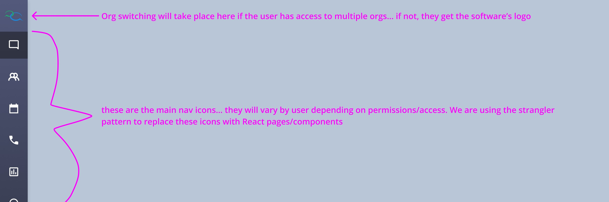
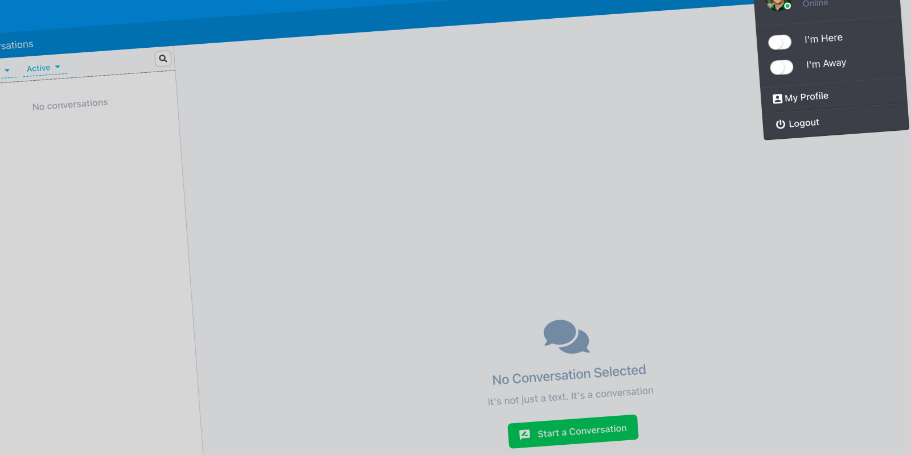
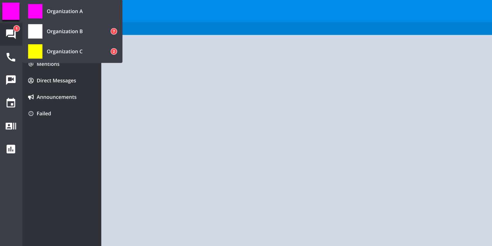

Beyond the Login
The login screen is the easy part.
The Challenge
If we wanted to win enterprise clients, we had to stop building for the customers we had and start building for the customers we wanted. Authentication was the foundation that had to be rebuilt first… and it was more complex than anyone had fully mapped out.
This wasn’t reactive work. We had a client ready to split into 34 organizations, with two users who needed access to all of them. We knew if we waited for enterprise to arrive before solving for it, we’d be in trouble.
Role
As Product Owner and UX Lead, I was responsible for scoping, documenting, and designing the authentication and authorization capabilities for the React modules. What started as a migration became a ground-up enterprise system design.
Un Understand
The Gaps Were Hiding in Plain Sight
On the surface, authentication was working. Users logged in. The app responded. Nobody was complaining.
But underneath, the gaps were real. Sessions lasted 14 days regardless of activity. An email address could only belong to one organization, which meant large accounts required convoluted internal workarounds to function. There was no SSO. MFA was outdated. And user status was determined by a manual Here/Away toggle… not by whether the user was actually in the system.
That last one sounds minor. It wasn’t. In a large organization, knowing who is actively available to answer inbound messages is critical. It was entirely possible for a user to be marked as Here while on vacation, because their 14-day session hadn’t expired yet.

Building for the Client We Wanted
We had a real use case driving urgency. An existing client needed to split into 34 organizations, with two administrators who needed access to all of them. Under our existing architecture, that was difficult without internal workarounds that don’t scale to enterprise buyers.
We knew as a company that doubling revenue meant winning enterprise clients. This work was top-down directive and bottom-up instinct at the same time… nobody wanted to be in reactive mode when the right client came along.
Si Simplify
Starting in the Right Place
We were using the strangler pattern to modernize a monolith… replacing Ember components and routes with React equivalents, one module at a time, within a single codebase. Authentication and authorization felt like the right place to start. Get identity right first, and everything built on top of it inherits that foundation.
What I thought was a simple login workflow turned into five interconnected Capability Briefs. Each one closing a specific gap.
Identity-First Login
The existing workflow was simple, username and password, every time, for every user. Identity-first changes that. By identifying the user first, we could determine the right authentication path before showing them any inputs.
A Google email address? Route them through Google SSO. No reason to show a password field that we’d only have to support and secure. It’s a cleaner UI, less overhead on our end, and more secure for the user. All three at once.
Session Management
Replaced the 14-day blanket expiration with true activity-based sessions. Defined the full session lifecycle… creation, expiration, forced termination, and what happens when a session expires mid-request. This was also the brief where I introduced four status states to replace the Here/Away toggle: Green (active), Yellow (idle), Red (away), and Gray (offline). Status is now determined by the system, not by the user remembering to flip a switch.
Single Sign-On (SSO)
Designed for org-level enforcement, not user opt-in. If SSO is required for an org, there’s no path around it. Documented grant revocation handling and what happens when SSO is the only allowed path and the provider goes down.
Multi-Org Context Switching
This was the most complex brief, and the most important one for our enterprise ambitions. Allowing an email address to belong to multiple organizations was net-new functionality. The two administrators who needed access to all 34 orgs were the north star for this design.
I defined the session isolation model, the UI contract for switching context, and what persists vs. resets across an org change. Multi-org wasn’t a migration of existing accounts… it was a new model designed to make future enterprise setups clean from day one.

MFA Enforcement
Designed for org-level policy, not individual preference. Addressed trusted devices, grace periods, and what the system must do when a user’s MFA method becomes invalid.
Al Align
The Decisions That Needed an Owner
Most of these decisions had never been formally made. The existing system had just accumulated behavior over time.
Should sessions expire absolutely or based on activity? What determines a user’s status when they haven’t touched the app in two hours? If an admin forces a logout across an org, how quickly does it propagate? What happens to notifications and auto-replies when a session expires?
These aren’t purely UX questions or engineering questions… they’re product decisions with compliance and operational implications. Someone has to own them.
I owned them. They’re documented in the briefs.
Takeaways…
This is the work that rarely shows up in a portfolio… but it’s the work that determines whether a platform can actually serve enterprise customers.
The login screen is the easy part. What sits behind it… session policy, identity routing, status modeling, multi-org architecture… those are the decisions that either open the door to enterprise or quietly keep it closed.
We made those decisions before a single line of code was written. No surprises mid-sprint. No architectural gaps discovered after the fact.